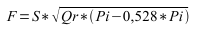
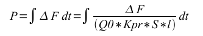

| Название | Версия | Лицензия | Источник | Языки | Автор | Описание |
|---|---|---|---|---|---|---|
| Библиотека моделей аппаратов технологических процессов | 2.0 | GPLv2 | OscadaLibs.db (SQL, GZip) > DAQ.JavaLikeCalc.techApp | en, uk, ru | Роман Савоченко Максим Лысенко (2007,2010), Ксения Яшина (2007) |
Библиотека моделей технологических аппаратов для создания комплексных моделей технологических процессов.
|
Библиотека создаётся для предоставления моделей аппаратов технологических процессов. Библиотека не является статической, а строится на основе модуля JavaLikeCalc, позволяющего создавать вычисления на Java-подобном языке.
Для адресации к функции этой библиотеки можно использовать статический адрес вызова DAQ.JavaLikeCalc.lib_techApp.{Func}() или динамический SYS.DAQ.JavaLikeCalc["lib_techApp"]["{Func}"].call(), SYS.DAQ.JavaLikeCalc["lib_techApp"].{Func}(). Где {Func} — идентификатор функции в библиотеке.
Для подключения библиотеки к проекту станции OpenSCADA Вы можете получить файл БД как:
$ wget http://oscada.org/svn/trunk/OpenSCADA/data/LibsDB/OscadaLibs.sql $ sqlite3 -init OscadaLibs.sql OscadaLibs.db .exit
Этот загруженный файл Вы далее можете разместить в каталоге проекта станции и создать объект базы данных модуля БД "SQLite", зарегистрировав файл базы данных в конфигурации.
В основе модели каждого аппарата лежит вычисление входного расхода и выходного давления, исходя из входного давления и выходного расхода. В целом, модели аппаратов технологических процессов описываются разностными уравнениями для дискретных машин.
На основе функций этой библиотеки можно легко и быстро строить модели технологических процессов в модуле BlockCalc путём объединения блоков согласно технологической схемы. Пример объединения части аппаратов технологической схемы приведен на рисунке 1.

В основе модели любого аппарата ТП лежат две основные формулы, а именно формула расхода и давления среды. Каноническая формула расхода среды для сечения трубы или проходного сечения сужения имеет вид (1).
 (1)
(1)
Где:
Реальная плотность вычисляется по формуле (2).
 (2)
(2)
Где:
Любая труба представляет потоку динамическое сопротивление, связанное с трением о стенки трубы и которое зависит от скорости потока. Динамическое сопротивление трубы выражается формулой (3). Общий расход среды с учётом динамического сопротивления вычисляется по формуле (4).
 (3)
(3)
Где:
 (4)
(4)
Формула (1) описывает ламинарное истечение среды до критических скоростей. В случае превышения критической скорости вычисление расхода осуществляется по формуле (5). Универсальная формула расчёта расхода на всех скоростях будет иметь вид (6).
 (5)
Где:
 (6)
(6)
Где:
В динамических системах изменение расхода на конце трубы не меняется мгновенно, а запаздывает на время перемещения участка среды от начала трубопровода к концу. Это время зависит от длины трубы и скорости движения среды в трубе. Задержку изменения расхода на конце трубы можно описать формулой (7). Результирующая формула расчёта расхода в трубе, с учётом описанных выше особенностей, записывается в виде (8).
 (7)
(7)
Где:
 (8)
(8)
Давление среды в объеме обычно вычисляется идентично для всех случаев, по формуле (9).
 (9)
В своём составе библиотека содержит около двух десятков моделей часто востребованных аппаратов технологических процессов и вспомогательных элементов. Названия функций и их параметров доступны на трёх языках: Английский, Украинский и Российский.
Модель задержки. Может использоваться для имитации запаздывания значений датчиков.
Параметры
| Идентификатор | Параметр | Тип | Режим | Скрытый | По умолчанию |
|---|---|---|---|---|---|
| out | Выход | Веществ. | Возврат | false | 0 |
| in | Вход | Веществ. | Вход | false | 0 |
| t_lg | Время запаздывания, секунд | Веществ. | Вход | false | 10 |
| f_frq | Частота вычисления, Гц | Веществ. | Вход | true | 100 |
Программа
out -= (out-in)/(t_lg*f_frq);
Модель шума. Содержит три составляющие:
Параметры
| Идентификатор | Параметр | Тип | Режим | Скрытый | По умолчанию |
|---|---|---|---|---|---|
| out | Выход | Веществ. | Возврат | false | 0 |
| off | Общее смещение | Веществ. | Вход | false | 1 |
| a_g1 | Амплитуда гармоники 1 | Веществ. | Вход | false | 10 |
| per_g1 | Период гармоники 1, секунд | Веществ. | Вход | false | 10 |
| a_g2 | Амплитуда гармоники 2 | Веществ. | Вход | false | 5 |
| per_g2 | Период гармоники 2, секунд | Веществ. | Вход | false | 0.1 |
| a_rnd | Амплитуда случайных значений | Веществ. | Вход | false | 1 |
| f_frq | Частота вычисления, Гц | Веществ. | Вход | true | 100 |
| tmp_g1 | Счётчик гармоники 1 | Веществ. | Вход | true | 0 |
| tmp_g2 | Счётчик гармоники 2 | Веществ. | Вход | true | 0 |
Программа
tmp_g1 = (tmp_g1 > 6.28) ? 0 : tmp_g1+6.28/(per_g1*f_frq); tmp_g2 = (tmp_g2 > 6.28) ? 0 : tmp_g2+6.28/(per_g2*f_frq); out = off + a_g1*sin(tmp_g1) + a_g2*sin(tmp_g2) + a_rnd*(rand(2)-1);
Модель шарового крана. Включает время хода и время отрыва.
Параметры
| Идентификатор | Параметр | Тип | Режим | Скрытый | По умолчанию |
|---|---|---|---|---|---|
| pos | Положение, % | Веществ. | Выход | false | 0 |
| com | Команда | Логич. | Вход | false | 0 |
| st_open | Состояние "Открыто" | Логич. | Выход | false | 0 |
| st_close | Состояние "Закрыто" | Логич. | Выход | false | 1 |
| t_full | Время хода, секунд | Веществ. | Вход | false | 5 |
| t_up | Время отрыва, секунд | Веществ. | Вход | false | 0.5 |
| f_frq | Частота вычисления, Гц | Веществ. | Вход | true | 100 |
| tmp_up | Счётчик отрыва | Веществ. | Вход | true | 0 |
| lst_com | Последняя команда | Логич. | Вход | true | 0 |
Программа
if(!(st_close && !com) && !(st_open && com)) {
tmp_up = (pos > 0 && pos < 100) ? 0 : (tmp_up>0&&lst_com==com)?tmp_up-1/f_frq:t_up;
pos += (tmp_up > 0) ? 0 : (100*(com?1:-1))/(t_full*f_frq);
pos = (pos > 100) ? 100 : (pos<0)?0:pos;
st_open = (pos >= 100) ? true : false;
st_close = (pos <= 0) ? true : false;
lst_com = com;
}
Модель сепаратора с двумя фазами, жидкой и газовой.
Параметры
| Идентификатор | Параметр | Тип | Режим | Скрытый | По умолчанию |
|---|---|---|---|---|---|
| Fi | Входной расход, т/ч | Веществ. | Выход | false | 0 |
| Pi | Входное давление, ата | Веществ. | Вход | false | 1 |
| Si | Входное сечение, м2 | Веществ. | Вход | false | 0.2 |
| Fo | Выходной расход, т/ч | Веществ. | Вход | false | 0 |
| Po | Выходное давление, ата | Веществ. | Выход | false | 1 |
| So | Выходное сечение, м2 | Веществ. | Вход | false | 0.2 |
| lo | Выходная длина, м | Веществ. | Вход | false | 10 |
| Fo_lq | Выходной расход жидкости, т/ч | Веществ. | Вход | false | 0 |
| Po_lq | Выходное давление жидкости, ата | Веществ. | Выход | false | 1 |
| Llq | Уровень жидкости, % | Веществ. | Выход | false | 0 |
| PercLq | % жидкости | Веществ. | Вход | false | 0.01 |
| Vap | Объём аппарата, м3 | Веществ. | Вход | false | 10 |
| Q0 | Нормальная плотность среды, кг/м3 | Веществ. | Вход | false | 1 |
| Qlq | Плотность жидкости, кг/м3 | Веществ. | Вход | false | 1000 |
| f_frq | Частота вычисления, Гц | Веществ. | Вход | true | 200 |
Программа
Flq = max(0, Fi*PercLq); DAQ.JavaLikeCalc.lib_techApp.pipeBase(Fi, Pi, 293, Si, Fo+Flq, Po, 293, So, lo, Q0, 0.95, 0.01, f_frq); Llq = max(0, min(100,Llq+0.27*(Flq-Fo_lq)/(Vap*Qlq*f_frq))); Po_lq = Po + Llq*Vap/Qlq;
Модель клапана, учитывающая:
Параметры
| Идентификатор | Параметр | Тип | Режим | Скрытый | По умолчанию |
|---|---|---|---|---|---|
| Fi | Входной расход, т/ч | Веществ. | Выход | false | 0 |
| Pi | Входное давление, ата | Веществ. | Вход | false | 1 |
| Ti | Входная температура, К | Веществ. | Вход | false | 273 |
| Fo | Выходной расход, т/ч | Веществ. | Вход | false | 0 |
| Po | Выходное давление, ата | Веществ. | Выход | false | 1 |
| To | Выходная температура, К | Веществ. | Выход | false | 273 |
| So | Выходное сечение трубы, м2 | Веществ. | Вход | false | 0.2 |
| lo | Выходная длина трубы, м | Веществ. | Вход | false | 10 |
| S_v1 | Сечение клапана 1, м2 | Веществ. | Вход | false | 0.1 |
| l_v1 | Положение клапана 1, % | Веществ. | Вход | false | 0 |
| t_v1 | Время хода клапана 1, секунд | Веществ. | Вход | false | 10 |
| S_v2 | Сечение клапана 2, м2 | Веществ. | Вход | false | 0.05 |
| l_v2 | Положение клапана 2, % | Веществ. | Вход | false | 0 |
| t_v2 | Время хода клапана 2, секунд | Веществ. | Вход | false | 10 |
| Q0 | Нормальная плотность среды, кг/м3 | Веществ. | Вход | false | 1 |
| Kln | Коэффициент нелинейности | Веществ. | Вход | false | 1 |
| Kpr | Коэффициент сжимаемости среды [0...1] | Веществ. | Вход | false | 0.95 |
| Ct | Теплоёмкость среды | Веществ. | Вход | false | 20 |
| Riz | Тепловое сопротивление изоляции | Веществ. | Вход | false | 20 |
| noBack | Обратный клапан | Логич. | Вход | false | 0 |
| Fwind | Скорость воздуха | Веществ. | Вход | false | 1 |
| Twind | Температура воздуха, К | Веществ. | Вход | false | 273 |
| f_frq | Частота вычисления, Гц | Веществ. | Вход | true | 200 |
| tmp_l1 | Задержка положения 1 | Веществ. | Выход | true | 0 |
| tmp_l2 | Задержка положения 2 | Веществ. | Выход | true | 0 |
Программа
Qr = Q0+Q0*Kpr*(Pi-1); tmp_l1 += (abs(l_kl1-tmp_l1) > 5) ? 100*sign(l_kl1-tmp_l1)/(t_kl1*f_frq) : (l_kl1-tmp_l1)/(t_kl1*f_frq); tmp_l2 += (abs(l_kl2-tmp_l2) > 5) ? 100*sign(l_kl2-tmp_l2)/(t_kl2*f_frq) : (l_kl2-tmp_l2)/(t_kl2*f_frq); Sr = (S_kl1*pow(tmp_l1,Kln)+S_kl2*pow(tmp_l2,Kln))/pow(100,Kln); DAQ.JavaLikeCalc.lib_techApp.pipeBase(Fi, Pi, Ti, Sr, EVAL_REAL, Po, 293, So, lo, Q0, Kpr, 0.01, f_frq); if(noBack) Fi = max(0, Fi); Po = max(0, min(100,Po+0.27*(Fi-Fo)/(Q0*Kpr*So*lo*f_frq))); To = max(0, min(2e3,To+(abs(Fi)*(Ti*pow(Po/Pi,0.02)-To)+(Fwind+1)*(Twind-To)/Riz)/(Ct*So*lo*Qr*f_frq)));
Модель чистого(транспортного) запаздывания. Реализуется путём включения нескольких простых звеньев запаздывания. Предназначен для имитации запаздывания в длинных трубопроводах.
Параметры
| Идентификатор | Параметр | Тип | Режим | Скрытый | По умолчанию |
|---|---|---|---|---|---|
| out | Выход | Веществ. | Возврат | false | 0 |
| in | Вход | Веществ. | Вход | false | 0 |
| t_lg | Время запаздывания, секунд | Веществ. | Вход | false | 10 |
| f_frq | Частота обсчёта (Гц) | Веществ. | Вход | true | 100 |
| cl1 | Звено 1 | Веществ. | Вход | true | 0 |
| cl2 | Звено 2 | Веществ. | Вход | true | 0 |
| cl3 | Звено 3 | Веществ. | Вход | true | 0 |
Программа
cl1 -= (cl1-in)/(t_lg*f_frq/4); cl2 -= (cl2-cl1)/(t_lg*f_frq/4); cl3 -= (cl3-cl2)/(t_lg*f_frq/4); out -= (out-cl3)/(t_lg*f_frq/4);
Модель барабана котлоагрегата.
Параметры
| ID | Параметр | Тип | Режим | Скрытый | По умолчанию |
|---|---|---|---|---|---|
| Fi1 | Входной расход воды, т/ч | Веществ. | Выход | false | 22 |
| Pi1 | Входное давление воды, ата | Веществ. | Вход | false | 43 |
| Ti1 | Входная температура воды, K | Веществ. | Вход | false | 523 |
| Si1 | Входное сечение труб с водой, м2 | Веществ. | Вход | false | 0.6 |
| Fi2 | Входной расход дымовых газов, т/ч | Веществ. | Выход | false | |
| Pi2 | Входное давление дымовых газов, ата | Веществ. | Вход | false | 1.3 |
| Ti2 | Входная температура дымовых газов, K | Веществ. | Вход | false | 1700 |
| Si2 | Входное сечение трубы дымовых газов, м2 | Веществ. | Вход | false | 10 |
| Vi1 | Объем барабана, м3 | Веществ. | Вход | false | 3 |
| Lo | Уровень в барабане, % | Веществ. | Выход | false | 10 |
| S | Поверхность нагрева, м2 | Веществ. | Вход | false | 15 |
| k | Коэффициент теплоотдачи | Веществ. | Вход | false | 0.8 |
| Fo | Выходной расход пара, т/ч | Веществ. | Вход | false | 20 |
| Po1 | Выходное давление пара, ата | Веществ. | Выход | false | 41.68 |
| To1 | Выходная температура пара, K | Веществ. | Выход | false | 10 |
| So1 | Выходное сечение трубы по пару, м2 | Веществ. | Вход | false | 0.5 |
| lo1 | Выходная длина трубы пара, м | Веществ. | Вход | false | 5 |
| Fo2 | Выходной расход дымовых газов, т/ч | Веществ. | Вход | false | 180 |
| Po2 | Выходное давление дымовых газов, ата | Веществ. | Выход | false | 1 |
| To2 | Выходная температура дымовых газов, K | Веществ. | Вход | false | 0 |
| Fstm | Расход пара в барабане, т/ч | Веществ. | Выход | false | 0 |
| Tv | Температура воды в барабане, K | Веществ. | Выход | false | 0 |
| f_frq | Частота вычисления, Гц | Веществ. | Вход | false | 200 |
Программа
// Water
DAQ.JavaLikeCalc.lib_techApp.pipeBase(Fi1, Pi1, 293, Si1, EVAL_REAL, Po1, 293, So1, lo1, 1e3, 0.001, 0.01, f_frq);
Fi1 = max(0, Fi1);
// Steam
Lo = max(0, min(100,Lo+(Fi1-Fstm)*100/(Vi1*1000*f_frq)));
To1 = (100*pow(Po1,0.241)+5) + 273;
if(Tv < To1) {
Tv += (k*S*(Ti2-Tv)-Fi1*0.00418*(Tv-Ti1))/f_frq;
Fstm = 0;
}
if(Tv >= To1) {
Tv = To1;
Lambda = 2750-0.00418*(Tv-273);
Fstm = (5*S*Fi2*(Ti2-Tv)-Fi1*0.00418*(Tv-Ti1))/(Po1*Lambda);
}
To2 = Ti2-Tv/k;
Po1 = max(0, min(100,Po1+0.27*(Fstm-Fo)/(1.2*0.98*((1-Lo/100)*Vi1+So1*lo1)*f_frq)));
// Smoke gas
DAQ.JavaLikeCalc.lib_techApp.pipeBase(Fi2, Pi2, 293, Si2, Fo2, Po2, 293, Si2, 30, 1.2, 0.98, 0.01, f_frq);
Модель топки котлоагрегата, работающего на трех видах топлива, исходно это: доменный, коксовый и природный газы.
Параметры
| Идентификатор | Параметр | Тип | Режим | Скрытый | По умолчанию |
|---|---|---|---|---|---|
| Fi1 | Входной расход доменного газа, т/ч | Веществ. | Выход | false | |
| Pi1 | Входное давление доменного газа, ата | Веществ. | Вход | false | |
| Ti1 | Входная температура доменного газа, K | Веществ. | Вход | false | 40 |
| Si1 | Входное сечение трубы доменного газа, м2 | Веществ. | Вход | false | |
| Fi2 | Входной расход природного газа, т/ч | Веществ. | Выход | false | |
| Pi2 | Входное давление природного газа, ата | Веществ. | Вход | false | |
| Ti2 | Входная температура природного газа, K | Веществ. | Вход | false | 20 |
| Si2 | Входное сечение трубы природного газа, м2 | Веществ. | Вход | false | |
| Fi3 | Входной расход коксового газа, т/ч | Веществ. | Выход | false | |
| Pi3 | Входное давление коксового газа, ата | Веществ. | Вход | false | |
| Ti3 | Входная температура коксового газа, K | Веществ. | Вход | false | 0 |
| Si3 | Входное сечение трубы коксового газа, м2 | Веществ. | Вход | false | |
| Fi4 | Входной расход воздуха, т/ч | Веществ. | Выход | false | |
| Pi4 | Входное давление воздуха, ата | Веществ. | Вход | false | |
| Ti4 | Входная температура воздуха, K | Веществ. | Вход | false | 20 |
| Si4 | Входное сечение трубы воздуха, м2 | Веществ. | Вход | false | |
| Fo | Выходной расход дымовых газов, т/ч | Веществ. | Вход | false | |
| Po | Выходное давление дымовых газов, ата | Веществ. | Выход | false | |
| To | Выходная температура дымовых газов, K | Веществ. | Выход | false | |
| So | Выходное сечение трубы, м2 | Веществ. | Вход | false | 90 |
| lo | Выходная длина трубы, м | Веществ. | Вход | false | |
| V | Объём топки, м3 | Веществ. | Вход | false | 830 |
| CO | Процент содержания CO в дымовых газах, % | Веществ. | Выход | false | |
| O2 | Процент содержания O2 в дымовых газах, % | Веществ. | Выход | false | |
| f_frq | Частота вычисления, Гц | Веществ. | Вход | false | 200 |
Программа
using DAQ.JavaLikeCalc.lib_techApp; pipeBase(Fi1, Pi1, Ti1, Si1, EVAL_REAL, Po, 293, So, lo, 1.2, 0.95, 0.01, f_frq); Fi1 = max(0, Fi1); pipeBase(Fi2, Pi2, Ti2, Si2, EVAL_REAL, Po, 293, So, lo, 0.7, 0.95, 0.01, f_frq); Fi2 = max(0, Fi2); pipeBase(Fi3, Pi3, Ti3, Si3, EVAL_REAL, Po, 293, So, lo, 1.33, 0.95, 0.01, f_frq); Fi3 = max(0, Fi3); pipeBase(Fi4, Pi4, Ti4, Si4, EVAL_REAL, Po, 293, So, lo, 1.293, 0.95, 0.01, f_frq); Fi4 = max(0, Fi4); Neobhod_vzd = Fi1 + 10*Fi2 + 4*Fi3; F_DG = Fi1 + Fi2 + Fi3 + Fi4; O2 = max(0, min(100,(Fi4-Neobhod_vzd)*100/F_DG)); CO = min(100, (O2<1) ? (1.2*abs(O2)) : 0); koef = min(1, Fi4/Neobhod_vzd); Q = koef*(8050*Fi2+3900*Fi3+930*Fi1); delta_t = Q/(F_DG*1.047); To = max(0, min(2000,(delta_t+(Ti4-273)+(Ti3-273)*(Fi3/Fi1)+(Ti2-273)*(Fi2/Fi1)+(Ti1-273)*(Fi1/Fi4))+273)); Po = max(0, min(10,Po+0.27*(F_DG-Fo)/(1.2*0.95*(So*lo+V)*f_frq)));
Нагрузка с фиксированным давлением сети. Содержит параметр для подключения шума.
Параметры
| Идентификатор | Параметр | Тип | Режим | Скрытый | По умолчанию |
|---|---|---|---|---|---|
| Fi | Входной расход, т/ч | Веществ. | Выход | false | 10 |
| Pi | Входное давление, ата | Веществ. | Вход | false | 1 |
| Po | Задание выходного давления, ата | Веществ. | Вход | false | 1 |
| So | Сечение трубы на выходе, м2 | Веществ. | Вход | false | 0.1 |
| Kpr | Коэффициент сжимаемости среды [0...1] | Веществ. | Вход | false | 0.95 |
| Noise | Шум входного расхода | Веществ. | Вход | false | 1 |
| Q0 | Нормальная плотность среды, кг/м3 | Веществ. | Вход | false | 1 |
| f_frq | Частота вычисления, Гц | Веществ. | Вход | true | 200 |
Программа
DAQ.JavaLikeCalc.lib_techApp.pipeBase(Fi, Pi, 293, So, EVAL_REAL, Po, 293, So, 10, Q0, Kpr, 0.01, f_frq);
Источник с фиксированным давлением. Содержит параметр для подключения шума.
Параметры
| Идентификатор | Параметр | Тип | Режим | Скрытый | По умолчанию |
|---|---|---|---|---|---|
| Pi | Задание входного давления, ата | Веществ. | Вход | false | 10 |
| Fo | Выходной расход, т/ч | Веществ. | Вход | false | 0 |
| Po | Выходное давление, ата | Веществ. | Выход | false | 1 |
| So | Сечение трубы на выходе, м2 | Веществ. | Вход | false | 0.1 |
| lo | Длина трубы на выходе, м | Веществ. | Вход | false | 100 |
| Noise | Шум входного давления | Веществ. | Вход | false | 1 |
| Q0 | Нормальная плотность среды, кг/м3 | Веществ. | Вход | false | 1 |
| Kpr | Коэффициент сжимаемости среды [0...1] | Веществ. | Вход | false | 0.95 |
| f_frq | Частота обчислення, Гц | Веществ. | Вход | true | 200 |
| Fit | Входной расход, удержанный | Веществ. | Выход | true | 0 |
Программа
DAQ.JavaLikeCalc.lib_techApp.pipeBase(Fit, Pi*Noise, 293, So, Fo, Po, 293, So, lo, Q0, Kpr, 0.01, f_frq);
Модель воздушного охладителя газового потока.
Параметры
| Идентификатор | Параметр | Тип | Режим | Скрытый | По умолчанию |
|---|---|---|---|---|---|
| Fi | Входной расход, т/ч | Веществ. | Выход | false | 0 |
| Pi | Входное давление, ата | Веществ. | Вход | false | 1 |
| Ti | Входная температура, К | Веществ. | Вход | false | 273 |
| Si | Сечение трубок, м2 | Веществ. | Вход | false | 0.05 |
| li | Общая длина трубок, м | Веществ. | Вход | false | 10 |
| Fo | Выходной расход, т/ч | Веществ. | Вход | false | 0 |
| Po | Выходное давление, ата | Веществ. | Выход | false | 1 |
| To | Выходная температура, К | Веществ. | Выход | false | 273 |
| So | Выходное сечение трубы, м2 | Веществ. | Вход | false | 0.2 |
| lo | Длина выходной трубы, м | Веществ. | Вход | false | 10 |
| Tair | Температура охлаждения воздуха, К | Веществ. | Вход | false | 283 |
| Wc | Производительность холодильника | Веществ. | Вход | false | 200 |
| Q0 | Нормальная плотность среды, кг/м3 | Веществ. | Вход | false | 1 |
| Ct | Теплоёмкость среды | Веществ. | Вход | false | 100 |
| Rt | Тепловое сопротивление | Веществ. | Вход | false | 1 |
| f_frq | Частота вычисления, Гц | Веществ. | Вход | true | 200 |
Программа
DAQ.JavaLikeCalc.lib_techApp.pipeBase(Fi, Pi, 293, Si, Fo, Po, 293, So, lo, Q0, 0.95, 0.01, f_frq); Qr = Q0 + Q0*0.95*(Pi-1); To += (Fi*(Ti-To)+Wc*(Tair-To)/Rt)/(Ct*(Si*li+So*lo)*Qr*f_frq);
Модель газового компрессора. Учитывает эффект помпажа. Помпаж вычисляется по газо-динамической кривой, исходя из которой получается коэффициент запаса по помпажу.
Параметры
| Идентификатор | Параметр | Тип | Режим | Скрытый | По умолчанию |
|---|---|---|---|---|---|
| Fi | Входной расход, т/ч | Веществ. | Выход | false | 0 |
| Pi | Входное давление, ата | Веществ. | Вход | false | 1 |
| Ti | Входная температура, К | Веществ. | Вход | false | 273 |
| Fo | Выходной расход, т/ч | Веществ. | Вход | false | 0 |
| Po | Выходное давление, ата | Веществ. | Выход | false | 1 |
| To | Выходная температура, К | Веществ. | Выход | false | 273 |
| So | Выходное сечение трубы, м2 | Веществ. | Вход | false | 0.2 |
| lo | Длина выходной трубы, м | Веществ. | Вход | false | 2 |
| Kmrg | Коэффициент запаса по помпажу | Веществ. | Выход | false | 0.1 |
| N | Обороты компрессора, тыс. об./мин | Веществ. | Вход | false | 0 |
| V | Объём компрессора, м3 | Веществ. | Вход | false | 7 |
| Kpmp | Коэффициент помпажа, точка помпажа | Веществ. | Вход | false | 0.066 |
| Kslp | Коэффициент наклона помпажной кривой | Веществ. | Вход | false | 0.08 |
| Q0 | Нормальная плотность среды, кг/м3 | Веществ. | Вход | false | 1 |
| Kpr | Коэффициент сжимаемости среды [0...1] | Веществ. | Вход | false | 0.95 |
| Ct | Теплоёмкость среды | Веществ. | Вход | false | 100 |
| Riz | Тепловое сопротивление изоляции | Веществ. | Вход | false | 100 |
| Fwind | Скорость воздуха | Веществ. | Вход | false | 1 |
| Twind | Температура воздуха, К | Веществ. | Вход | false | 273 |
| f_frq | Частота вычисления, Гц | Веществ. | Вход | true | 200 |
| Fit | Входной расход, удержанный | Веществ. | Выход | true | 0 |
Программа
Pmax = max(Pi, Po);
Pmin = min(Pi, Po);
Qr = Q0 + Q0*Kpr*(Pi-1);
Qrf = Q0 + Q0*Kpr*(Pmax-1);
Ftmp = (N > 0.1) ? (1-10*(Po-Pi)/(Qr*(pow(N,3)+0.1)*Kpmp)) : 1;
Kmrg = 1-Ftmp; //The margin coefficient
Fi = V*N*Qr*sign(Ftmp)*pow(abs(Ftmp),Kslp)+
0.3*(4*So*Qrf/(0.01*lo*1.7724+4*Qrf))*sign(Pi-Po)*pow(Qrf*(Pmax-max(Pmax*0.528,Pmin)),0.5);
Fit -= (Fit-Fi)/max(1,(lo*f_frq)/max(1e-4,abs(Fi/(Qrf*So))));
Po = max(0, min(100,Po+0.27*(Fi-Fo)/(Q0*Kpr*So*lo*f_frq)));
To += (abs(Fi)*(Ti*pow(Po/Pi,0.3)-To)+(Fwind+1)*(Twind-To)/Riz)/(Ct*(V+So*lo)*Qr*f_frq);
Источник с фиксированным расходом. Содержит параметр для подключения шума.
Параметры
| Идентификатор | Параметр | Тип | Режим | Скрытый | По умолчанию |
|---|---|---|---|---|---|
| Fi | Задание входного расхода, т/ч | Веществ. | Вход | false | 10 |
| Fo | Выходной расход, т/ч | Веществ. | Вход | false | 10 |
| Po | Выходное давление, ата | Веществ. | Выход | false | 1 |
| So | Сечение трубы на выходе, м2 | Веществ. | Вход | false | 0.1 |
| lo | Длина трубы на выходе, м | Веществ. | Вход | false | 100 |
| Noise | Шум входного расхода | Веществ. | Вход | false | 1 |
| Q0 | Нормальная плотность среды, кг/м3 | Веществ. | Вход | false | 1 |
| Kpr | Коэффициент сжимаемости среды [0...1] | Веществ. | Вход | false | 0.95 |
| f_frq | Частота вычисления, Гц | Веществ. | Вход | true | 100 |
Программа
Po = max(0, min(100,Po+0.27*(Noise*Fi-Fo)/(Q0*Kpr*So*lo*f_frq)));
Реализация базовых основ модели трубы:
Параметры
| Идентификатор | Параметр | Тип | Режим | Скрытый | По умолчанию |
|---|---|---|---|---|---|
| Fi | Входной расход, т/ч | Веществ. | Выход | false | 0 |
| Pi | Входное давление, ата | Веществ. | Вход | false | 1 |
| Ti | Входная температура, К | Веществ. | Вход | false | 293 |
| Si | Входное сечение, м2 | Веществ. | Вход | false | 0.2 |
| Fo | Выходной расход, т/ч | Веществ. | Вход | false | 0 |
| Po | Выходное давление, ата | Веществ. | Выход | false | 1 |
| To | Выходная температура, К | Веществ. | Выход | false | 293 |
| So | Выходное сечение, м2 | Веществ. | Вход | false | 0.2 |
| lo | Выходная длина, м | Веществ. | Вход | false | 10 |
| Q0 | Нормальная плотность среды, кг/м3 | Веществ. | Вход | false | 1 |
| Kpr | Коэффициент сжимаемости среды [0...1] | Веществ. | Вход | false | 0.98 |
| Ktr | Коэффициент трения | Веществ. | Вход | false | 0.01 |
| f_frq | Частота вычисления, Гц | Веществ. | Вход | false | 100 |
Программа
Pmax = max(Pi, Po); Pmin = min(Pi, Po); Qr = Q0 + Q0*Kpr*(Pmax-1); Fit = 630*(4*Si*So*Qr/(Ktr*lo*1.7724*Si+4*So*Qr))*sign(Pi-Po)*pow(Qr*(Pmax-max(Pmax*0.528,Pmin)),0.5); Fi -= (Fi-Fit)/max(1,(lo*f_frq)/max(1,abs(Fit/(Qr*So)))); if(!Fo.isEVal()) Po = max(0, min(100,Po+0.27*(Fi-Fo)/(Q0*Kpr*So*lo*f_frq)));
Модель узла труб по схеме "1 -> 1".
Параметры
| Идентификатор | Параметр | Тип | Режим | Скрытый | По умолчанию |
|---|---|---|---|---|---|
| Fi | Входной расход, т/ч | Веществ. | Выход | false | 0 |
| Pi | Входное давление, ата | Веществ. | Вход | false | 1 |
| Fo | Выходной расход, т/ч | Веществ. | Вход | false | 0 |
| Po | Выходное давление, ата | Веществ. | Выход | false | 1 |
| So | Выходное сечение, м2 | Веществ. | Вход | false | 0.2 |
| lo | Выходная длина, м | Веществ. | Вход | false | 10 |
| Q0 | Нормальная плотность среды, кг/м3 | Веществ. | Вход | false | 1 |
| Kpr | Коэффициент сжимаемости среды [0...1] | Веществ. | Вход | false | 0.95 |
| f_frq | Частота вычисления, Гц | Веществ. | Вход | true | 200 |
| Pti | Pti | Веществ. | Выход | true | 1 |
| Fto | Fto | Веществ. | Выход | true | 0 |
| Pt1 | Pt1 | Веществ. | Выход | true | 1 |
| Ft1 | Ft1 | Веществ. | Выход | true | 0 |
Программа
DAQ.JavaLikeCalc.lib_techApp.pipeBase(Fi, Pi, 293, So, Ft1, Pti, 293, So, 0.33*lo, Q0, Kpr, 0.01, f_frq); DAQ.JavaLikeCalc.lib_techApp.pipeBase(Ft1, Pti, 293, So, Fto, Pt1, 293, So, 0.33*lo, Q0, Kpr, 0.01, f_frq); DAQ.JavaLikeCalc.lib_techApp.pipeBase(Fto, Pt1, 293, So, Fo, Po, 293, So, 0.33*lo, Q0, Kpr, 0.01, f_frq);
Модель узла труб по схеме "2 -> 1".
Параметры
| Идентификатор | Параметр | Тип | Режим | Скрытый | По умолчанию |
|---|---|---|---|---|---|
| Fi1 | Входной расход 1, т/ч | Веществ. | Выход | false | 0 |
| Pi1 | Входное давление 1, ата | Веществ. | Вход | false | 1 |
| Ti1 | Входная температура 1, К | Веществ. | Вход | false | 273 |
| Si1 | Входное сечение 1, м2 | Веществ. | Вход | false | 0.2 |
| Fi2 | Входной расход 2, т/ч | Веществ. | Выход | false | 0 |
| Pi2 | Входное давление 2, ата | Веществ. | Вход | false | 1 |
| Ti2 | Входная температура 2, К | Веществ. | Вход | false | 273 |
| Si2 | Входное сечение 2, м2 | Веществ. | Вход | false | 0.2 |
| Fo | Выходной расход, т/ч | Веществ. | Вход | false | 0 |
| Po | Выходное давление, ата | Веществ. | Выход | false | 1 |
| To | Выходная температура, К | Веществ. | Выход | false | 273 |
| So | Выходное сечение 1, м2 | Веществ. | Вход | false | 0.2 |
| lo | Выходная длина 1, м | Веществ. | Вход | false | 10 |
| Q0 | Нормальная плотность среды, кг/м3 | Веществ. | Вход | false | 1 |
| Kpr | Коэффициент сжимаемости среды [0...1] | Веществ. | Вход | false | 0.95 |
| Ct | Теплоёмкость среды | Веществ. | Вход | false | 20 |
| Riz | Тепловое сопротивления изоляции | Веществ. | Вход | false | 20 |
| Fwind | Скорость воздуха | Веществ. | Вход | false | 1 |
| Twind | Температура воздуха, К | Веществ. | Вход | false | 273 |
| f_frq | Частота вычисления, Гц | Веществ. | Вход | true | 100 |
Программа
DAQ.JavaLikeCalc.lib_techApp.pipeBase(Fi1, Pi1, 293, Si1, EVAL_REAL, Po, 293, So, lo, Q0, Kpr, 0.01, f_frq); DAQ.JavaLikeCalc.lib_techApp.pipeBase(Fi2, Pi2, 293, Si2, EVAL_REAL, Po, 293, So, lo, Q0, Kpr, 0.01, f_frq); Po = max(0, min(100,Po+0.27*(Fi1+Fi2-Fo)/(Q0*Kpr*So*lo*f_frq))); To = max(0, To+(Fi1*(Ti1-To)+Fi2*(Ti2-To)+(Fwind+1)*(Twind-To)/Riz)/(Ct*So*lo*Q0*f_frq));
Модель узла труб по схеме "3 -> 1".
Параметры
| Идентификатор | Параметр | Тип | Режим | Скрытый | По умолчанию |
|---|---|---|---|---|---|
| Fi1 | Входной расход 1, т/ч | Веществ. | Выход | false | 0 |
| Pi1 | Входное давление 1, ата | Веществ. | Вход | false | 1 |
| Ti1 | Входная температура 1, К | Веществ. | Вход | false | 273 |
| Si1 | Входное сечение 1, м2 | Веществ. | Вход | false | 0.2 |
| Fi2 | Входной расход 2, т/ч | Веществ. | Выход | false | 0 |
| Pi2 | Входное давление 2, ата | Веществ. | Вход | false | 1 |
| Ti2 | Входная температура 2, К | Веществ. | Вход | false | 273 |
| Si2 | Входное сечение 2, м2 | Веществ. | Вход | false | 0.2 |
| Fi3 | Входной расход 3, т/ч | Веществ. | Выход | false | 0 |
| Pi3 | Входное давление 3, ата | Веществ. | Вход | false | 1 |
| Ti3 | Входная температура 3, К | Веществ. | Вход | false | 273 |
| Si3 | Входное сечение 3, м2 | Веществ. | Вход | false | 0.2 |
| Fo | Выходной расход, т/ч | Веществ. | Вход | false | 0 |
| Po | Выходное давление, ата | Веществ. | Выход | false | 1 |
| To | Выходная температура, К | Веществ. | Выход | false | 273 |
| So | Выходное сечение 1, м2 | Веществ. | Вход | false | 0.2 |
| lo | Выходная длина 1, м | Веществ. | Вход | false | 10 |
| Q0 | Нормальная плотность среды, кг/м3 | Вход | false | 1 | |
| Kpr | Коэффициент сжимаемости среды [0...1] | Веществ. | Вход | false | 0.95 |
| Ct | Теплоёмкость среды | Веществ. | Вход | false | 20 |
| Riz | Тепловое сопротивление изоляции | Веществ. | Вход | false | 20 |
| Fwind | Скорость воздуха | Веществ. | Вход | false | 1 |
| Twind | Температура воздуха, К | Веществ. | Вход | false | 273 |
| f_frq | Частота вычисления, Гц | Веществ. | Вход | true | 100 |
Программа
DAQ.JavaLikeCalc.lib_techApp.pipeBase(Fi1, Pi1, 293, Si1, EVAL_REAL, Po, 293, So, lo, Q0, Kpr, 0.01, f_frq); DAQ.JavaLikeCalc.lib_techApp.pipeBase(Fi2, Pi2, 293, Si2, EVAL_REAL, Po, 293, So, lo, Q0, Kpr, 0.01, f_frq); DAQ.JavaLikeCalc.lib_techApp.pipeBase(Fi3, Pi3, 293, Si3, EVAL_REAL, Po, 293, So, lo, Q0, Kpr, 0.01, f_frq); Po = max(0, min(100,Po+0.27*(Fi1+Fi2+Fi3-Fo)/(Q0*Kpr*So*lo*f_frq))); To = max(0, To+(Fi1*(Ti1-To)+Fi2*(Ti2-To)+Fi3*(Ti3-To)+(Fwind+1)*(Twind-To)/Riz)/(Ct*So*lo*Q0*f_frq));
Модель узла труб по схеме "1 -> 2".
Параметры
| Идентификатор | Параметр | Тип | Режим | Скрытый | По умолчанию |
|---|---|---|---|---|---|
| Fi | Входной расход, т/ч | Веществ. | Выход | false | 0 |
| Pi | Входное давление, ата | Веществ. | Вход | false | 1 |
| Fo1 | Выходной расход 1, т/ч | Веществ. | Вход | false | 0 |
| Po1 | Выходное давление 1, ата | Веществ. | Выход | false | 1 |
| So1 | Выходное сечение 1, м2 | Веществ. | Вход | false | 0.2 |
| lo1 | Выходная длина 1, м | Веществ. | Вход | false | 10 |
| Fo2 | Выходной расход 2, т/ч | Веществ. | Вход | false | 0 |
| Po2 | Выходное давление 2, ата | Веществ. | Выход | false | 1 |
| So2 | Выходное сечение 2, м2 | Веществ. | Вход | false | 0.2 |
| lo2 | Выходная длина 2, м | Веществ. | Вход | false | 10 |
| Q0 | Нормальная плотность среды, кг/м3 | Веществ. | Вход | false | 1 |
| Kpr | Коэффициент сжимаемости среды [0...1] | Веществ. | Вход | false | 0.95 |
| f_frq | Частота обсчёта (Гц) | Веществ. | Вход | true | 100 |
| F1tmp | Временный расход 1 | Веществ. | Выход | true | 0 |
| F2tmp | Временный расход 2 | Веществ. | Выход | true | 0 |
| Pot1 | Выходное давление удержанное | Веществ. | Выход | true | 1 |
| Pot2 | Выходное давление удержанное | Веществ. | Выход | true | 1 |
Программа
DAQ.JavaLikeCalc.lib_techApp.pipeBase(F1tmp, Pi, 293, So1, Fo1, Po1, 293, So1, lo1, Q0, Kpr, 0.01, f_frq); DAQ.JavaLikeCalc.lib_techApp.pipeBase(F2tmp, Pi, 293, So2, Fo2, Po2, 293, So2, lo2, Q0, Kpr, 0.01, f_frq); Fi = F1tmp + F2tmp;
Модель узла труб по схеме "1 -> 3".
Параметры
| Идентификатор | Параметр | Тип | Режим | Скрытый | По умолчанию |
|---|---|---|---|---|---|
| Fi | Входной расход, т/ч | Веществ. | Выход | false | 0 |
| Pi | Входное давление, ата | Веществ. | Вход | false | 1 |
| Fo1 | Выходной расход 1, т/ч | Веществ. | Вход | false | 0 |
| Po1 | Выходное давление 1, ата | Веществ. | Выход | false | 1 |
| So1 | Выходное сечение 1, м2 | Веществ. | Вход | false | 0.2 |
| lo1 | Выходная длина 1, м | Веществ. | Вход | false | 10 |
| Fo2 | Выходной расход 2, т/ч | Веществ. | Вход | false | 0 |
| Po2 | Выходное давление 2, ата | Веществ. | Выход | false | 1 |
| So2 | Выходное сечение 2, м2 | Веществ. | Вход | false | 0.2 |
| lo2 | Выходная длина 2, м | Веществ. | Вход | false | 10 |
| Fo3 | Выходной расход 3, т/ч | Веществ. | Вход | false | 0 |
| Po3 | Выходное давление 3, ата | Веществ. | Выход | false | 1 |
| So3 | Выходное сечение 3, м2 | Веществ. | Вход | false | 0.2 |
| lo3 | Выходная длина 3, м | Веществ. | Вход | false | 10 |
| Q0 | Нормальная плотность среды, кг/м3 | Веществ. | Вход | false | 1 |
| Kpr | Коэффициент сжимаемости среды [0...1] | Веществ. | Вход | false | 0.95 |
| f_frq | Частота вычисления, Гц | Веществ. | Вход | true | 100 |
| F1tmp | Временный расход 1 | Веществ. | Выход | true | 0 |
| F2tmp | Временный расход 2 | Веществ. | Выход | true | 0 |
| F3tmp | Временный расход 3 | Веществ. | Выход | true | 0 |
| Pot1 | Временное давление 1 | Веществ. | Выход | true | 1 |
| Pot2 | Временное давление 2 | Веществ. | Выход | true | 1 |
| Pot3 | Временное давление 3 | Веществ. | Выход | true | 1 |
Программа
DAQ.JavaLikeCalc.lib_techApp.pipeBase(F1tmp, Pi, 293, So1, Fo1, Po1, 293, So1, lo1, Q0, Kpr, 0.01, f_frq); DAQ.JavaLikeCalc.lib_techApp.pipeBase(F2tmp, Pi, 293, So2, Fo2, Po2, 293, So2, lo2, Q0, Kpr, 0.01, f_frq); DAQ.JavaLikeCalc.lib_techApp.pipeBase(F3tmp, Pi, 293, So3, Fo3, Po3, 293, So3, lo3, Q0, Kpr, 0.01, f_frq); Fi = F1tmp + F2tmp + F3tmp;
Модель узла труб по схеме "1 -> 4".
Параметры
| Идентификатор | Параметр | Тип | Режим | Скрытый | По умолчанию |
|---|---|---|---|---|---|
| Fi | Входной расход, т/ч | Веществ. | Выход | false | 0 |
| Pi | Входное давление, ата | Веществ. | Вход | false | 1 |
| Fo1 | Выходной расход 1, т/ч | Веществ. | Вход | false | 0 |
| Po1 | Выходное давление 1, ата | Веществ. | Выход | false | 1 |
| So1 | Выходное сечение 1, м2 | Веществ. | Вход | false | 0.2 |
| lo1 | Выходная длина 1, м | Веществ. | Вход | false | 10 |
| Fo2 | Выходной расход 2, т/ч | Веществ. | Вход | false | 0 |
| Po2 | Выходное давление 2, ата | Веществ. | Выход | false | 1 |
| So2 | Выходное сечение 2, м2 | Веществ. | Вход | false | 0.2 |
| lo2 | Выходная длина 2, м | Веществ. | Вход | false | 10 |
| Fo3 | Выходной расход 3, т/ч | Веществ. | Вход | false | 0 |
| Po3 | Выходное давление 3, ата | Веществ. | Выход | false | 1 |
| So3 | Выходное сечение 3, м2 | Веществ. | Вход | false | 0.2 |
| lo3 | Выходная длина 3, м | Веществ. | Вход | false | 10 |
| Fo4 | Выходной расход 4, т/ч | Веществ. | Вход | false | 0 |
| Po4 | Выходное давление 4, ата | Веществ. | Выход | false | 1 |
| So4 | Выходное сечение 4, м2 | Веществ. | Вход | false | 0.2 |
| lo4 | Выходная длина 4, м | Веществ. | Вход | false | 10 |
| Q0 | Нормальная плотность среды, кг/м3 | Веществ. | Вход | false | 1 |
| Kpr | Коэффициент сжимаемости среды [0...1] | Веществ. | Вход | false | 0.95 |
| f_frq | Частота вычисления, Гц | Веществ. | Вход | true | 100 |
| F1tmp | Временный расход 1 | Веществ. | Выход | true | 0 |
| F2tmp | Временный расход 2 | Веществ. | Выход | true | 0 |
| F3tmp | Временный расход 3 | Веществ. | Выход | true | 0 |
| F4tmp | Временный расход 4 | Веществ. | Выход | true | 0 |
| Pot1 | Временное давление 1 | Веществ. | Выход | true | 1 |
| Pot2 | Временное давление 2 | Веществ. | Выход | true | 1 |
| Pot3 | Временное давление 3 | Веществ. | Выход | true | 1 |
| Pot4 | Временное давление 4 | Веществ. | Выход | true | 1 |
Программа
DAQ.JavaLikeCalc.lib_techApp.pipeBase(F1tmp, Pi, 293, So1, Fo1, Po1, 293, So1, lo1, Q0, Kpr, 0.01, f_frq); DAQ.JavaLikeCalc.lib_techApp.pipeBase(F2tmp, Pi, 293, So2, Fo2, Po2, 293, So2, lo2, Q0, Kpr, 0.01, f_frq); DAQ.JavaLikeCalc.lib_techApp.pipeBase(F3tmp, Pi, 293, So3, Fo3, Po3, 293, So3, lo3, Q0, Kpr, 0.01, f_frq); DAQ.JavaLikeCalc.lib_techApp.pipeBase(F4tmp, Pi, 293, So4, Fo4, Po4, 293, So4, lo4, Q0, Kpr, 0.01, f_frq); Fi = F1tmp + F2tmp + F3tmp + F4tmp;
Модель исполнительного механизма клапана. Включает время хода и время отрыва.
Параметры
| Идентификатор | Параметр | Тип | Режим | Скрытый | По умолчанию |
|---|---|---|---|---|---|
| pos | Положение, % | Веществ. | Выход | false | 0 |
| pos_sensor | Положение по датчику, % | Веществ. | Выход | false | 0 |
| com | Команда | Веществ. | Вход | false | 0 |
| st_open | Состояние "Открыто" | Логич. | Выход | false | 0 |
| st_close | Состояние "Закрыто" | Логич. | Выход | false | 1 |
| t_full | Время хода, секунд | Веществ. | Вход | false | 3 |
| t_up | Время срыва, секунд | Веществ. | Вход | false | 1 |
| t_sensor | Время задержки сенсора, секунд | Веществ. | Вход | false | 1 |
| f_frq | Частота обсчёта, Гц | Веществ. | Вход | true | 100 |
| tmp_up | Счётчик срыва | Веществ. | Выход | false | 0 |
| lst_com | Последняя команда | Веществ. | Выход | false | 0 |
Программа
if((pos >= 99 && com >= 99) || (pos <= 1 && com <= 1)) {
tmp_up = t_up;
if(pos >= 99) { pos = 100; st_open = true; }
else { pos = 0; st_close = true; }
}
else if(tmp_up > 0) tmp_up -= 1/f_frq;
else {
st_open = st_close = false;
lst_com += (com-lst_com)/(0.5*t_full*f_frq);
pos += (lst_com-pos)/(0.5*t_full*f_frq);
}
pos_sensor += (pos-pos_sensor)/(t_sensor*f_frq);
Модель диафрагмы.
Параметры
| Идентификатор | Параметр | Тип | Режим | Скрытый | По умолчанию |
|---|---|---|---|---|---|
| Fi | Входной расход, т/ч | Веществ. | Выход | false | 0 |
| Pi | Входное давление, ata | Веществ. | Вход | false | 1 |
| Fo | Выходной расход, т/ч | Веществ. | Вход | false | 0 |
| Po | Выходное давление, ata | Веществ. | Выход | false | 1 |
| dP | Перепад давления, кПа | Веществ. | Выход | false | 0 |
| Sdf | Сечение диафрагмы, м2 | Веществ. | Вход | false | 0.1 |
| So | Выходное сечение трубы, м2 | Веществ. | Вход | false | 0.2 |
| lo | Длина трубы на выходе, м | Веществ. | Вход | false | 10 |
| Q0 | Нормальная плотность среды, кг/м3 | Веществ. | Вход | false | 1 |
| Kpr | Коэффициент сжимаемости среды [0...1] | Веществ. | Вход | false | 0.95 |
| f_frq | Частота вычисления, Гц | Веществ. | Вход | true | 100 |
Программа
DAQ.JavaLikeCalc.lib_techApp.pipeBase(Fi, Pi, 293, Sdf, Fo, Po, 293, So, lo, Q0, Kpr, 0.01, f_frq); dP -= (dP-100*(Pi-Po))/f_frq;
Модель теплообменника, рассчитывающая теплообмен двух потоков.
Параметры
| Идентификатор | Параметр | Тип | Режим | Скрытый | По умолчанию |
|---|---|---|---|---|---|
| Fi1 | Входной расход 1, т/ч | Веществ. | Вход | false | 20 |
| Pi1 | Входное давление 1, ата | Веществ. | Вход | false | 1 |
| Ti1 | Входная температура 1, K | Веществ. | Вход | false | 20 |
| Si1 | Входное сечение 1, м2 | Веществ. | Вход | false | 1 |
| li1 | Входная длина 1, м | Веществ. | Вход | false | 10 |
| Q0i1 | Входная нормальная плотность 1, кг/м3 | Веществ. | Вход | false | 1 |
| Kpr1 | Входной коэффициент сжимаемости среды 1 [0...1] | Веществ. | Вход | false | 0.9 |
| Ci1 | Входная теплоёмкость 1 | Веществ. | Вход | false | 1 |
| Fi2 | Входной расход 2, т/ч | Веществ. | Вход | false | 20 |
| Pi2 | Входное давление 2, ата | Веществ. | Вход | false | 1 |
| Ti2 | Входная температура 2, K | Веществ. | Вход | false | 40 |
| Si2 | Входное сечение 2, м2 | Веществ. | Вход | false | 1 |
| li2 | Входная длина 2, м | Веществ. | Вход | false | 10 |
| Q0i2 | Входная нормальная плотность 2, кг/м3 | Веществ. | Вход | false | 1 |
| Kpr2 | Входной коэффициент сжимаемости среды 2 [0...1] | Веществ. | Вход | false | 0.9 |
| Ci2 | Входная теплоёмкость 2 | Веществ. | Вход | false | 1 |
| ki | Коэффициент теплоотдачи | Веществ. | Вход | false | 0.9 |
| Fo1 | Выходной расход 1, т/ч | Веществ. | Вход | false | 0 |
| Po1 | Выходное давление 1, ата | Веществ. | Выход | false | 1 |
| To1 | Выходная температура 1, K | Веществ. | Выход | false | 273 |
| So1 | Выходное сечение 1, м2 | Веществ. | Выход | false | 1 |
| lo1 | Выходная длина 1, м | Веществ. | Выход | false | 10 |
| Fo2 | Выходной расход 2, т/ч | Веществ. | Вход | false | 0 |
| Po2 | Выходное давление 2, ата | Веществ. | Выход | false | 1 |
| To2 | Выходная температура 2, K | Веществ. | Выход | false | 273 |
| So2 | Выходное сечение 2, м2 | Веществ. | Выход | false | 1 |
| lo2 | Выходная длина 2, м | Веществ. | Выход | false | 10 |
| f_frq | Частота вычисления, Гц | Веществ. | Вход | false | 200 |
Программа
DAQ.JavaLikeCalc.lib_techApp.pipeBase(Fi1, Pi1, Ti1, Si1, Fo1, Po1, 293, So1, lo1, Q0i1, Kpr1, 0.01, f_frq); DAQ.JavaLikeCalc.lib_techApp.pipeBase(Fi2, Pi2, Ti2, Si2, Fo2, Po2, 293, So2, lo2, Q0i2, Kpr2, 0.01, f_frq); To1 = max(0, min(1e4,(Fi1*Ti1*Ci1+ki*Fi2*Ti2*Ci2)/(Fi1*Ci1+ki*Fi2*Ci2))); To2 = max(0, min(1e4,(ki*Fi1*Ti1*Ci1+Fi2*Ti2*Ci2)/(ki*Fi1*Ci1+Fi2*Ci2)));
| Libs/Technological_apparatuses/ru - GFDL | March 2020 | OpenSCADA 1+r2666 |
{kind=link}
{kind=link}